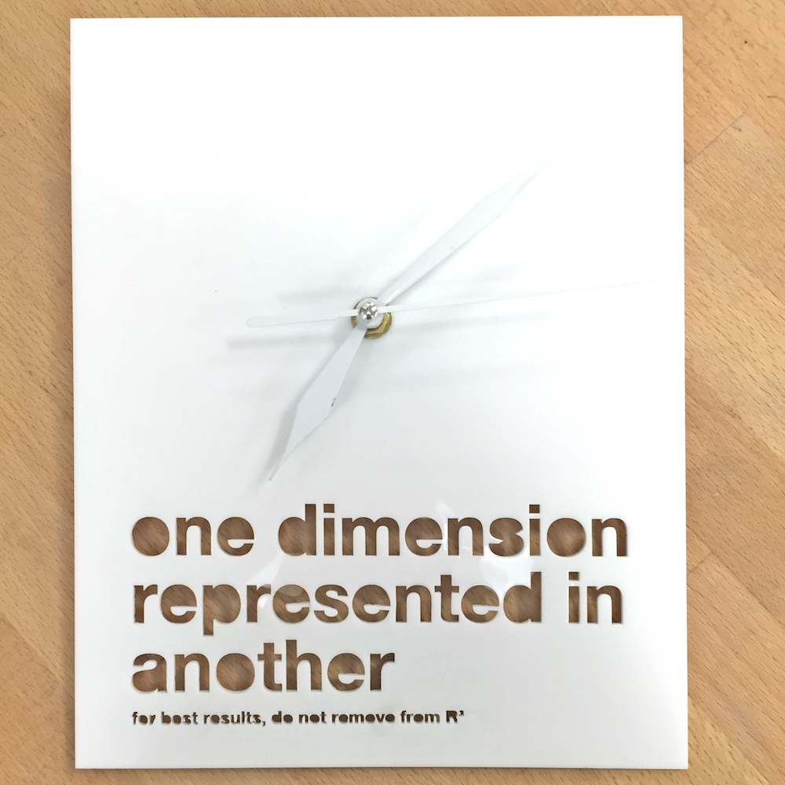
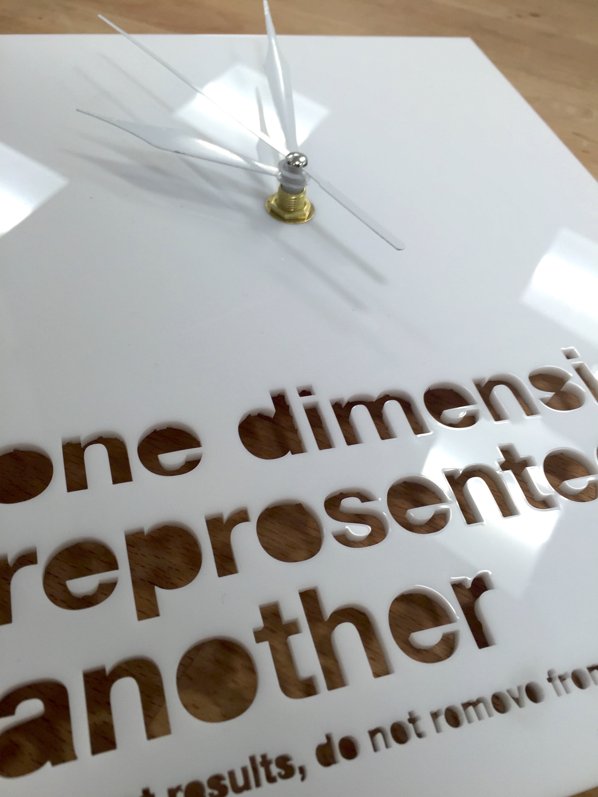
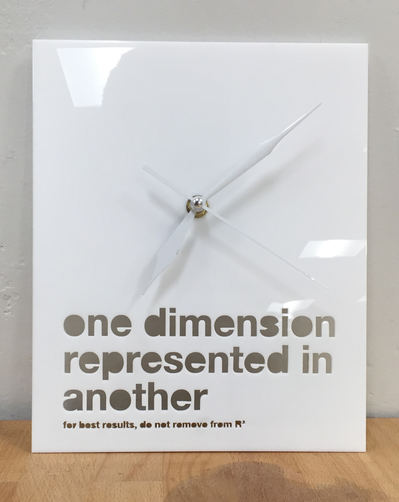

Acrylic Clock
Is it a clock? Or is it just time represented in space.
This punny clock was designed (in Rhino) and laser cut by me for my Digital Tooling (DigiTool) class in spring of 2016. From this project and many laser cutting projects after, I've become quite proficient in the use of several models and methods of laser cutting materials. (Note: I did not design or build the actual time keeping mechanism, that was purchased and pre-assembled)


